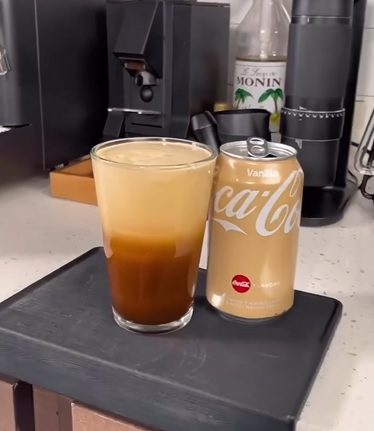

Cola Aerocano

Description
Whether you're enjoying it on a hot summer day, as a satisfying companion to your favorite meal,
or as a standalone treat, Vanilla Coke Aerocano is sure to quench your thirst and satisfy your cravings. Indulge in the creamy, fizzy perfection of Vanilla Coke Aerocano!
This unique concoction combines the classic Coca-Cola refreshment with a delightful twist of smooth vanilla flavor.
Ingredients
- 60 ml of espresso
- crushed ice
- 150 ml of cold water
- Coca-cola vanilla flavor
Steps
- Add water and ice to your steaming pitcher.
- Pull two shots of espresso from your espresso machine.
- Add espresso shots to your ice and water in the steaming pitcher.
- Aerate the espresso, water, and ice with the steam wand of your espresso machine for 12 seconds.
- Pour the Aerocano over more ice.
- Fill the rest of the cup with coke.
Return to main page